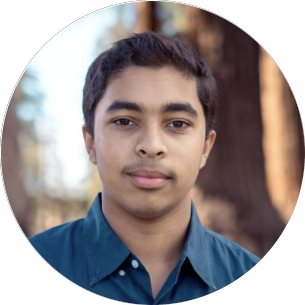

Hi, welcome to my page. I’m Sid, an incoming freshman at NYU studying Computer Science, and below this text are the projects that I’ve worked on until now. All of my projects represent some kind of thought that I would have in the spur of the moment that later became a fleshed out goal that I was determined to reach.
Most recently, I’ve been working on my Stock Test project, which originated from my interest in the stock market. Ever since I was young, my grandpa would give me some money on my birthday every year to invest in stocks, slowly teaching me about what stocks were, the companies I would invest in, and how I could make or lose money. I became fascinated as I grew older, wanting to solve the mystery of the market, trying to figure out a way to always win, beat the market, and build something myself that could change my life forever. And so I built this stock backtesting simulator, to put all of my crazy ideas into a machine that could show me how effective each method I thought up was.
My first ever project, Dou Shou Qi, came from my interest in artificial intelligence, especially in the area involving games. After watching AlphaGo beat the world champion of Go, I decided that I wanted to build my own AI, for a game that I had recently discovered. I came across Dou Shou Qi in my Mandarin class, where my teacher introduced it to me as one of China’s oldest games that still attracted people today. I worked for years, learning about AI algorithms, about building websites, and learned new programming languages to bring my project to life.
The NOAA Project: I wanted to know whether Santa Clara County is really getting hotter or whether it just feels that way every August, so I pulled decades of NOAA records and plotted them.
The ECOSTRESS Project: Then California had a brutal 2024, and it turns out ECOSTRESS thermal imaging is a remarkably direct way to watch a heatwave happen from orbit.
Through a whole host of languages has come these projects, each one telling a story of some random thought in my head that I wanted to see play out. My favorite part is always the moment when I finish the project, runs with no bugs of course, and shows me something I could have never imagined.